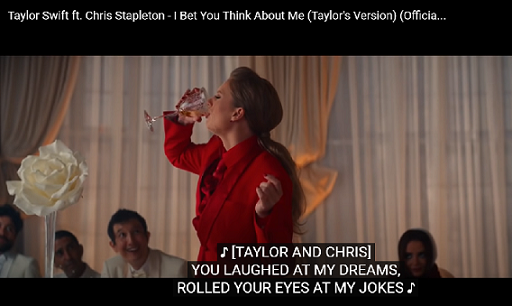

Took a deep breath in the mirror
He didn't like it when I wore high heels, but I do
Turned the lock and put my headphones on
He always said he didn't get this song but I do, I do
Walked in expecting you'd be late
But you got here early and you stand and wait
I walk to you
You pull my chair out and help me in
And you don't know how nice that is, but I do
And you throw your head back laughing like a little kid
I think it's strange that you think I'm funny 'cause he never did

I've been spending the last eight months thinking all love ever does
Is break and burn and end
But on a Wednesday in a café I watched it begin again
You said you never met one girl who
Had as many James Taylor records as you, but I do
We tell stories and you don't know why
I'm coming off a little shy, but I do
But you throw your head back laughing like a little kid
I think it's strange that you think I'm funny 'cause he never did
I've been spending the last eight months thinking all love ever does
Is break and burn and end
But on a wednesday in a café I watched it begin again
And we walk down the block to my car
And I almost brought him up
But you start to talk about the movies
That your family watches
Every single Christmas and I won't
Talk about that
And for the first time
What's past is past
'Cause you throw your head back laughing like a little kid
I think it's strange that you think I'm funny 'cause he never did
I've been spending the last eight months thinking all love ever does
Is break and burn and end
Then on a wednesday in a café I watched it begin again
Then on a wednesday in a café I watched it begin again